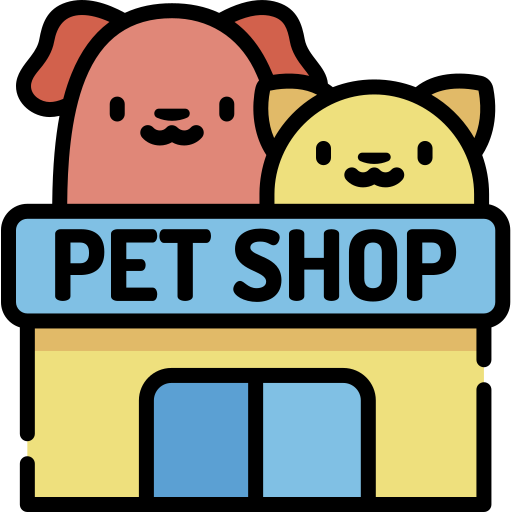

Baño y cuidado
Hasta 10 trabajadores especialistas.
Todos estos servicios en nuestro centro moderno en el centro de la ciudad.
Ver más →
Tus Mascotas, nuestro futuro

Hasta 10 trabajadores especialistas.
Todos estos servicios en nuestro centro moderno en el centro de la ciudad.
Ver más →
Más de 25 especialistas.
Encuéntranos en nuestros diferentes locales listos para atender a tu familia.
Ver más →
Los mejores estilistas de Arequipa.
Adquiere nuestros productos y nuestro servicio de spa.
Ver más →
Más de 35 paseadores.
Contáctanos para crear los horarios flexibles a ti.
Ver más →Disfruta cómodamente de nuestros beneficios de Vet-Perú en nuestras distintas sucursales en Arequipa y Lima, tampoco te pierdas las ventajas que te damos por confiarnos a tu integrante más engreído.